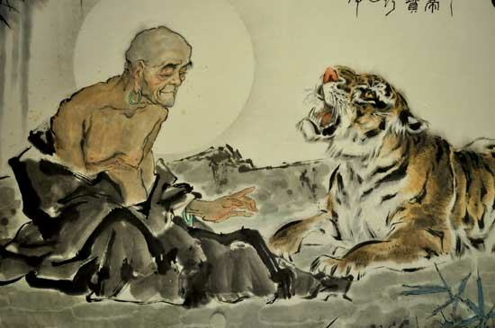

Rêve ou cauchemar : comment maîtriser le tigre TEI
http://lb42.github.io/Talks/2021-05-rennes.html
Texts 'r us
Quoique votre définition des ‘humanités numériques’, je suis certain qu'elle implique des considérations du texte et des textes numerisées...
‘texte’ dans le sens le plus complet...
- pas simplement des facsimilés numériques mais également leur transcriptions ;
- pas simplement des transcriptions, mais également des annotations et interprétations là dessus ;
- pas simplement des annotations, mais également des metadonnées ...

Lire, c'est encoder...
- La lecture des mots d'un texte imprimé ou manuscrit n'est pas aléatoire : elle est guidée par
- les signes de ponctuation, par les changements de police, par leur disposition spatiale etc
- nos connaissances linguistiques et culturelles; nos attentes de communication pareilles
- la situation socio-historique de la texte
- etc...
- Comment numériser les documents sans perdre ses informations? Une simple reconnaissance des caractères ne suffira pas.
C'est le job du balisage!
- Le balisage sert à exprimer nos lectures préalables
- Le balisage rend possible une polyvalence des ressources textuelles
- Le balisage induit des reflexions profondes sur la relation entre la materialité d'un texte et ses implications
La Text Encoding Initiative (TEI) nous propose une méthode de balisage
Qu'est-ce que la Text Encoding Initiative ?

- Une organisation, une institution ?
- un ‘club’, une mode, une religion ?
- une spécification technique ?
- un gabarit pour la construction des spécifications techniques ?
[cet excellent bouquin est toujours disponible en francais (http://books.openedition.org/oep/1237) ou en anglais (http://books.openedition.org/oep/679) !]
Concrètement la Text Encoding Initiative c'est ...
une ‘Initiative pour l'Encodage Textuel’....
- un ensemble de ‘recommandations’ pour l'encodage des ressources numériques avec XML
- un infrastructure internationale responsable de la maintenance, de l'évolution, et de la distribution de ces recommandations
- une communauté internationale d'utilisateurs de ces recommandations
Forcément, un cadre permettant de réflechir sur ce que c'est qu'un texte numérisé et non pas un "standard" fixe.
Un peu d'histoire: souvenez-vous de l’an 1987 ?
La Text Encoding Initiative est née dans un monde un peu différent du notre...
- C'était l'été de Joe le taxi, premier tube de Vanessa Paradis...
- le world wide web n’existait pas
- le tunnel sous la manche était en construction
- un état nommé l’Union Soviétique venait de lancer une station spatiale appelée "Mir" .. et de subir un désastre à Tchernobyl
- l’informatique sérieuse s’éffectuait uniquement sur les grosses machines dites ‘mainframes ’
…mais aussi dans un monde un peu familier…
- Les disciplines "linguistique de corpus" et "intelligence artificielle" avaient établi la nécessité de travailler avec des ressources numérisées et à grande échelle
- Des avancées en traitement de texte commençaient à avoir un effet sur la lexicographie et les systèmes de gestion documentaire (TeX, Scribe, tRoff..)
- L’ Internet existait, et les théories sur comment en profiter d'une manière ‘hypertextuelle’ abondaient
- On confrontait déjà les problèmes de pérennisation des données et d'incompatabilités technologiques (ex. les CD).
La fin du 20eme siecle... un temps de transition, et d'évolution
- Les ‘Humanities Computing’ étaient en train d’apparaître, comme ‘interdiscipline’
- les informaticiens et les chercheurs en SHS se regardaient (avec un peu de méfiance)
- dans quelques centres informatiques universitaires on s’est aperçu qu'il fallait faire de la recherche pour maintenir les services au niveau souhaité
- dans quelques centres de recherche on s'est aperçu des possibilités impressionantes de l’informatique...
Naissance de la Text Encoding Initiative
- En automne 1987 aux États-Unis, la NEH finance une réunion internationale sur la possibilité de définir des "text encoding guidelines"
- C'était un projet de recherche en "humanities computing"...
- Parrainé par trois associations érudites (ACL, ALLC et ACH: les ancêtres de l'ADHO)
- Financé par NEH aux Etats Unis, par l'un des premiers programmes de recherche "Language Engineering" en Europe, et par SSHRC au Canada
- Influences majeures
- bibliothèques et archives numerisées
- ingénierie linguistique
- édition des sources littéraires ou historiques
Les enjeux de la TEI
- Faciliter la création, l'échange, et l'intégration des données textuelles informatisées
- toute sorte de textes
- toutes les langues
- toute origine temporelle ou culturelle
- La TEI s'adresse également ...
- aux débutants, cherchant des solutions bien connues et consensuelles
- aux experts, cherchant à créer de nouvelles solutions
- Elle propose :
- de faire des recommandations qui se basent sur un consensus existant
- de préférer les solutions générales à celles spécifiques à une discipline
- en même temps de permettre la spécialisation et l'extension
Voir les Poughkeepsie Principles: https://tei-c.org/Vault/ED/edp01.htm
Pourquoi cet effort ?
- Parce qu’on s’est aperçu qu’on risquait une nouvelle confusion de langues avec l’arrivée de l'informatique dans la représentation des données textuelles !
- Mais aussi peut-être un désir de mettre à jour les traditions philologiques de la gestion des textes?
TEI chronologie - 1
- 1988 - 1990
- $€ Recherche financé phase 1: production de TEI P1
- 1990 - 1992
- $$ €€ Recherche financé phase 2: production des fascicules de TEI P2
- 1993 - 1994
- $$$ €€ integration des chapitres de P2 comme TEI P3
- 1995 - 1999
- $ Promotion et prise en main par des centres DH individuels
- 2000
- Établissement du Consortium TEI (incorporé en déc)
Organisation de la TEI (1991)
Les travaux de la TEI ont été pris en main par les deux ‘editors’ et par quatre ‘working committees’
- Documentation : bibliothécaires/archivistes
- Métalanguage : informaticiens
- Text Analysis and Interprétation : linguistes théoriques
- Text Representation : … "digital humanists" avant la lettre
Travaux de mutualisation
On a très vite compris qu’il y avait beaucoup de chevauchements parmi ces travaux. Les deux TEI Editors essayaient de participer aux débats de chaque comité, et d’appliquer, aussi rigoureusement que possible, le célèbre rasoir d’Ockham.
Néanmoins, la TEI propose (toujours) plusieurs systèmes de représentation pour (par ex) :
- la segmentation linguistique
- les annotations interprétatives (à plusieurs niveaux) avec des codes
- la documentation des codes interprétatifs
- des balisages effectués en ligne, et également en ‘standoff’
- …
(Encore une raison d’éviter l’usage de TEI All)
Texte ou données
En dépit de son nom la TEI ne se limite pas a la consideration des données textuelles. Déjà dans sa première version, elle propose des balises pour la représentation
- des informations bibliographiques
- des transcriptions de l'oral
- des analyses linguistiques
On considérait impossible l'imposition d'une seule modèle textuelle au/x communauté/s scientifique/s...
La TEI donc fournit un gabarit -- une espèce de kit Lego -- pour la construction d'un système de balisage adapté aux besoins spécifiques d'un projet particulier, tout en restant compréhensible à d'autres projets ou d'autres systemes.
L'essentiel, c'est l'explicitation des choix effectués, et des personnalisations éventuelles.
TEI chronologie - 2
- 2001 - 2003
- $ Conversion de P3 en XML (TEI P4), lancement d’une révision complète; création d'un système de gouvernance et de maintenance
- 2003 - 2005
- TEI P5 : révision majeure de P4 avec "releases" régulières ; le projet s'inscrit dans l'Open Science
- 2005 -
- Révision continue, avec des nouvelles versions deux fois par an (au moins): la version 4.2.2 vient d'apparaître
Organisation de la TEI
Au cours de cette deuxième période, la TEI se ré-invente comme partie incontournable de l'infrastructure des DH, en s'investissant dans le projet open science.
La question qui s’impose :
- Donc, la TEI est très ancienne !
- Elle précède le Web, le DVD, le téléphone portable, la télévision cablée, Microsoft Word..
- Les technologies informatiques qui survivent plus de 5 ans sont assez rares...
- Pourquoi et comment la TEI a-t-elle survécu presque 50 ans ?
La TEI facilite un balisage ‘intelligent’
La TEI de nos jours s'applique à l'encodage des...
- composants structuraux et fonctionnels d'un texte
- transcriptions diplomatiques des sources historiques, des images, des annotations
- liens, correspondances, alignements
- données et entités : par exemple de temps, personnes, lieux ou événements
- annotations peritextuelles et métatextuelles (correction, suppression, ajouts)
- analyses linguistiques
- métadonnées de plusieurs types
- ... et définitions formelles de schéma XML !
Il faut faire son choix ....
Les Cinq Étapes du chemin de l’Éveil TEI
- Modélisation : quels sont les buts et les objets de votre projet ?
- Orientation : est-ce que vos objets sont déjà reconnus par la TEI ?
- Déclaration : comment créer une spécification TEI-conforme ?
- Documentation : comment documenter vos pratiques TEI ?
- Validation : comment valider vos efforts ?
Modélisation
La modélisation de vos données est une préalable essentiel. Que vous vous serviez de UML, de RDBMS, de SKOS, ou de quoique ça soit d’autre, si vous n’avez pas un modèle explicite des choses que vous espérez gérer, vous aurez de grands difficultés.
Comment s’orienter ?
Les TEI Guidelines, imprimées ou en ligne, se divisent en deux grandes parties :
- une séquence de 23 chapitres, dont la plupart correspondent à un module
- des listes alphabétiques de définitions exhaustives de classes (183), d’éléments (546), d’attributs (470), de macros(8), et de types de données (28).
Comment savoir quel élément (etc.) choisir pour telle ou telle entité identifiée dans votre analyse préalable ? Comment savoir que vous avez besoin d’une ‘licorne’ ?
La triste vérité…
- Désolé, mais il n’y a aucune méthode scientifique ; aucun raccourci pour cela…
- Il faut étudier les exemplaires et les définitions pour savoir si cet élément TEI si prometteur s’applique en effet à votre cas
- comme c’est le cas pour d’autres types de mapping…
Pour chacun(e) des entités/concepts identifiés dans votre modèle, il faut décider :
- quel objet TEI lui correspond parfaitement ? (s’il existe)
- quel objet TEI lui ressemble et quelles petites modifications seraient nécessaires pour qu’il lui corresponde ?
- quelle lacune TEI votre analyse vous permettra de corriger (oui, elles existent les licornes !)
TEI modules (1)
Vous aurez assurément besoin des éléments de ces modules :
| module | contenant | P5 | P3 |
|---|
| core | éléments communs à presque tout type de documents | 82 | 71 |
| figures | tables, formules et figures | 7 | 6 |
| header | les métadonnées bibliographiques et autres | 69 | 57 |
| tei | module infrastructural définissant les types de données, les classes, et les macros utilisées partout | 0 | 0 |
| textstructure | éléments fondamentales de structuration | 33 | 31 |
TEI Modules (2)
Pour les manuscrits vous aurez probablement besoin de ceux ci:
| module | contents | P5 | P3 |
| gaiji | traitement des caractères et glyphes non Unicode | 11 | 15 |
| msdescription | catalogage et description des manuscrits et des incunables | 69 | 0 |
| textcrit | apparat critique classique | 14 | 12 |
| transcr | transcription diplomatique ou génétique des sources primaires | 29 | 10 |
TEI Modules (3)
D'autres types de document sont envisageables...
| module | contents | P5 | P3 |
| dictionaries | dictionnaires imprimés | 35 | 37 |
| drama | textes du théâtre, du cinéma, etc | 17 | 16 |
| spoken | transcription de l'oral | 14 | 7 |
| tagdocs | documentation des systèmes de balisage (ODD) | 54 | 31 |
| verse | textes poétiques | 4 | 6 |
TEI Modules (4)
Si vous faites des analyses spécialisées vous aurez peut-être besoin de quelques-uns de ceux-ci :
| module | contents | P5 | P3 |
| analysis | mécanismes simples pour l'analyse et l'interprétation | 11 | 10 |
| certainty | indications de certitude et probabilité | 3 | 2 |
| corpus | métadonnées pour les corpus | 14 | 26 |
| iso-fs | analyses abstraites utilisant des structures de trait | 28 | 32 |
| linking | liens, segmentation, alignements | 11 | 12 |
| namesdates | noms, dates, entités nommées | 52 | 30 |
| nets | graphes, réseaux génériques, et arborescences | 12 | 12 |
TEI P5: keeping up
- A new version of TEI P5 appears approximately twice a year, usually containing corrected errors, new examples, clearer documentation etc. But new features also appear...
- The ‘Birnbaum Doctrine’ requires that existing features should be retained (unless they are really broken): a document conformant with the first release of P5, should remain conformant with all subsequent versions
- When an existing feature is changed or withdrawn, it must go through a process of ‘deprecation’, lasting 6 months to a year, during which its imminent demise will be signalled explicitly by any TEI processor.
TEI P5: comment garder le cap?
- Une nouvelle version de TEI P5 apparait deux fois par an, largement pour integrer des corrections d'erreurs, des ameliorations d'explication ou d'exemplifications etc. Mais de contenu entierement nouveau arrive aussi ...
- La ‘doctrine de Birnbaum’ exige que les fonctionnalités existantes soient conservées (sauf si elles sont vraiment cassées) : un document conforme à la première version de P5, devrait rester conforme à toutes les versions ultérieures
- Lorsqu'une fonctionnalité existante est modifiée ou retirée, elle doit passer par un processus de ‘deprecation’, d'une durée de 6 mois à un an, au cours duquel sa disparition imminente sera signalée explicitement par tout processeur TEI.
L’esprit TEI
Qu’est-ce que cela veut dire : « utiliser la TEI » ?
- une pratique de balisage consensuelle
- un lexique commun
- un respect de l’autonomie
La TEI ne vous dit pas « fais comme moi » ; elle vous demande (gentiment) « explique-moi ce que tu fais. »
Un standard existe pour qu'on s'y conforme, non ?
La TEI est conçue pour soutenir une variété d'approches

- on peut simplement utiliser un sous-ensemble de ses propositions (TEI subset)
- on peut y ajouter des contraintes supplémentaires (customized subset)
- on peut y ajouter de nouveaux composants (extended subset)
Etre conforme à la TEI veut dire quoi?
- être honnet : Les éléments XML qui se déclarent comme appartenant au namespace TEI doivent respecter les définitions TEI de ces éléments
- être explicite : Pour valider un document TEI, un ODD est fortement conseillé, parce que cela
- mettra en évidence toutes les modifications effectuées
- fournira une définition formelle des ajouts proposés, compatible avec les définitions existantes
L'objet de ces règles est de faciliter le "blind interchange" des documents -- même s'ils ne le garantissent pas.
Niveaux de validation
Un document TEI-XML doit:
- respecter les règles syntaxiques d'XML;
- être valide par rapport à un schéma quelconque ; (un sous-ensemble de TEI-All, ou une extension)
- respecter la sémantique définie de chaque élément TEI utilisé
Un schéma (par ex en RELAXNG ou DTD) exprime une partie importante de ces règles; un ODD complète cette expression avec une documentation de la sémantique voulue.
Pourquoi TEI?
Les outils bureautiques, les base de données, les éditeurs Web ... pourquoi ne suffiront-ils pas à nos besoins?
- Parce que la TEI met l'emphase sur la signification des documents, plutôt que sur leur apparence
- Parce que la TEI est indépendante de toute plateforme/environnement informatique
- Parce que la TEI a été produite par et pour la communauté scientifique, qui reste responsable de son évolution
Avantages techniques de la TEI
- les points de correspondence et les similarités parmis les corpus TEI XML sont facilement mises en evidence, facilitant ainsi une approche "big data"
- on a la possibilité de profiter des travaux scientifiques déjà entretenus ailleurs et ainsi de partager les soins d'edition
- pareille pour les outils d'analyse et les traîtements automatiques
- mais en même temps avec la possibilité de personnaliser selon ses propres objectifs
Inconvénients de la TEI
- un investissement (peut être considérable) d'effort -- scientifique et technique -- est incontestable
- les avantages scientifiques de s'investir dans les données plutot que dans l'affichage des données ne sont toujours pas entièrement évidentes à tout le monde
- on risque de se sentir noyé par la complexité de ce qui est possible avec la TEI, ainsi perdant de vue qu'on peut également l'utiliser d'une manière très très simple ... et l'enrichir dans un temps futur
Pourquoi continuer de s’intéresser à la TEI ?
Deux raisons pour lesquelles les standards échouent le plus souvent :
- ils sont basés sur une théorie pas encore mûre
- ‘not invented here’ (pas de chez nous) : la communauté envisagée est trop diverse ou fragmentée
Le secret de la longévité de la TEI réside peut-être dans son adaptabilité... et dans sa réactivité à son environnement.
Comment faire mûrir une théorie ?
Dans son TEI ODD, on peut :
- limiter les valeurs possibles d’un attribut plus ou moins strictement
- proposer des règles Schematron sur le contenu (p.e. co-dependency)
- enlever quelques éléments facultatifs
- ajouter de nouveaux éléments, labellisés dans votre propre espace de nommage
Donc on peut évoluer et tester une théorie précoce, en restant toujours TEI-conforme.
Not Invented Here?
- TEI P5 propose des possibilités très extensives pour l'I18N...
- TEI héberge volontairement d’autres espaces de noms
- Donc on peut se servir des autres schémas existants :
- SVG pour les graphiques
- MathML pour les maths
- DCMI pour les metadonnées
- RDFa pour le "web sémantique"
- …
- La définition d’un élément TEI peut inclure (s’il y en a) son mapping avec d’autres ontologies, formalisé par un élément <equiv> (équivalent)
Mais, au fond, le modèle textuel proposé par la TEI reste proche à un modèle très répandu: très intuitif
L’évolution darwinienne, ça marche…
- faites vos modifications dans votre espace de nom
- documentez-les dans un ODD
- faites discuter vos propositions sur la liste TEI-L, ou dans un SIG !
- proposez les modifications efficaces au Conseil Scientifique de la TEI, en fournissant une "feature request" sur github
- Il y a une version nouvelle de TEI P5 deux fois par an…
... et n'oubliez pas de vous abonner au Consortium !